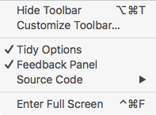
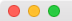

Full Screen Mode
Full screen mode makes it simple for you to use Balthisar Tidy for Work without any distractions. Follow these steps to enable full screen mode.
-
Select Enter Full Screen from the View menu. 
-
Alternatively you can use the shortcut key as shown in the View menu.
-
You can also use the standard Mac OS X document window title bar control to start full screen. 